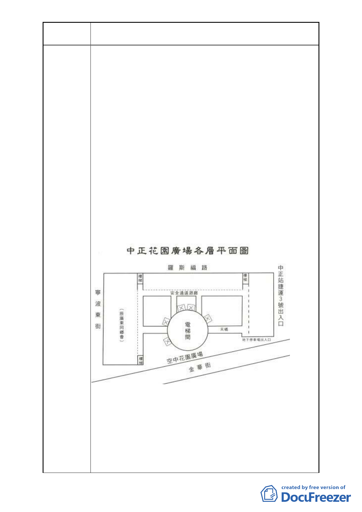

案名
變更臺北市中正區南海段一小段 719、724 地號等 2 筆停車場
用地為廣場用地細部計畫案
取開發適合區段使用目標，方案 1 古亭莊文化生活活動中
心 2 信義線、新莊線通車後搭乘捷運人口增加，而需增加
空間當作歇腳休憩，市民會面等車的活動中心 3 地下停車
是原規劃必須的使用目的 4 居者有其屋照顧原住者，達到
因都市更新後能提供一定比例合適規模住宅以利原住戶用
低成本購買居住空間，是原居住者的心聲與願望。感恩勿
忘規劃我們的未來。例如：新加坡即有 50 年歷史，幫助中
低收入者，由政府負責解決公共住房問題，現今政府要收
回我們的居住所，理應在都市更新當中的樓層，提供原居
民安家立命的住所才對，因此市民大膽請求參考新加坡政
府對人民的照顧，才是萬全政策。為什麼新加坡能，我們
政府卻不能辦到。市長們不是都在言，要追趕上新加坡？
嗎？
結論：變更多用途廣場才是正途，主管上級長官理應使變更
使用計畫，規劃得更周詳更完善，達轉型為綠建築與節能
低碳生活社區，提升環境品質，政府的設施是往後市民的
好典範。
-5-